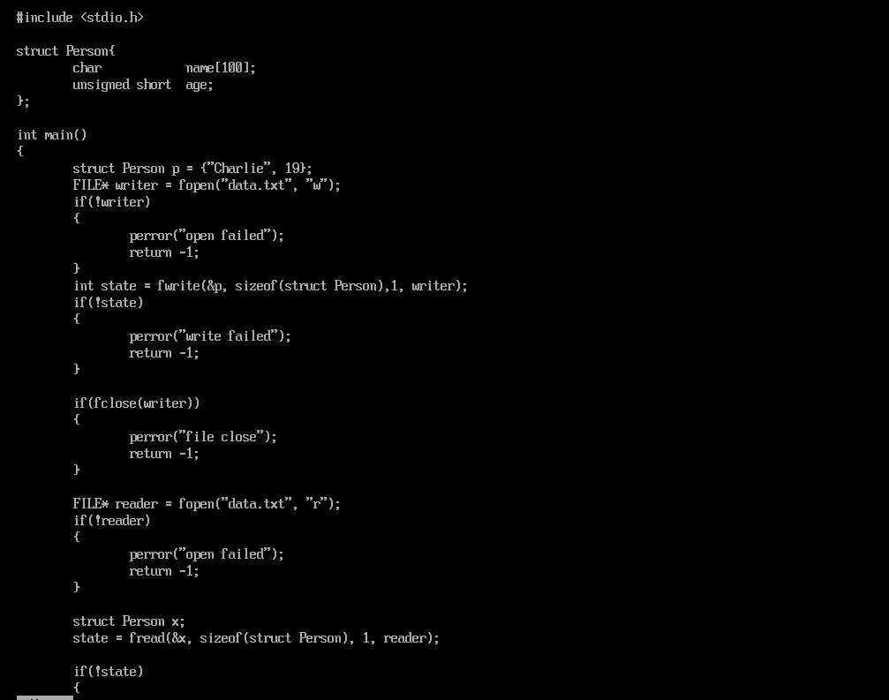
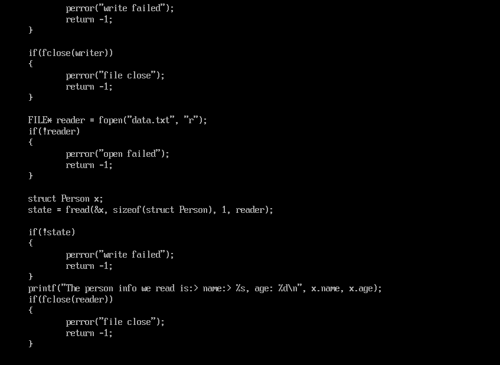

重新学习Linux系统编程-3
重新学习Linux系统3
缓冲IO
我们已经提到过了：块是文件系统中最小的存储单元的抽象，所有的文件操作都是基于块的大小进行操作的，所以更细粒度的内存操作往往可能会带来内存访问效率的降低，举个例子，想要访问1B的数据，我们必须拿到一个块的大小的buffer然后再去取出。这使得我们的调用十分的浪费，于是缓存IO应运而生。
顺带一提的是：块的大小一般是1024的倍数。我们的标准IO就是基于缓存技术+块状访问组合得到的。
在标准IO中，我们的文件变成了文件流，也就是使用一个结构体FILE来表示
打开文件
#include <stdio.h>
FILE* fopen(const char* path, const char* mode);| 模式 | 描述 |
|---|---|
| “r” | 打开一个用于读取的文件。该文件必须存在。 |
| “w” | 创建一个用于写入的空文件。如果文件名称与已存在的文件相同，则会删除已有文件的内容，文件被视为一个新的空文件。 |
| “a” | 追加到一个文件。写操作向文件末尾追加数据。如果文件不存在，则创建文件。 |
| “r+” | 打开一个用于更新的文件，可读取也可写入。该文件必须存在。 |
| “w+” | 创建一个用于读写的空文件。 |
| “a+” | 打开一个用于读取和追加的文件。 |
上面阐述了mode可以的取值。
还可以通过文件描述符打开文件：
#include <stdio.h>
FILE* fdopen(int handle,char* type);功能：将流与文件句柄连接
参数： int handle 为要操作的文件句柄 ，char *type 指定流打开方式
返回值： 返回指向该流的文件指针，出错了返回空
关闭流
#include <stdio.h>
int fclose(FILE *stream); // close the target
int fcloseall(); // close all in the current process从流中读取数据
读取一个字节
#include <stdio.h>
int fgetc(FILE* stream) 我们必须用一个int来接受字符，防止漏掉EOF
int c = fgetc(stream);
if(c == EOF)
// HANDLE ERROR
else
printf("c=%%c\n", (char)c);放回一个字节
#include <stdio.h>
int ungetc(int c, FILE* stream); 把c放回到队首去，下一次读取的时候就会读取到上一次放回的内容。
读取一行
#include <stdio.h>
char* fgets(char* str, int size, FILE* file); 我们将会读取size - 1个字节的内容，最后一个字节插入\0。当我们读到\n的时候就会把它放到字符串里然后结束读取。
函数失败返回NULL。
对于自定义的结束读取需要我们自己使用fgetc手动实现！
读取二进制
我们可以读取二进制数据，使用API
#include <stdio.h>
size_t fread(void *ptr, size_t size, size_t nmemb, FILE *stream)- ptr — 这是指向带有最小尺寸 size\nmemb* 字节的内存块的指针。
- size — 这是要读取的每个元素的大小，以字节为单位。
- nmemb — 这是元素的个数，每个元素的大小为 size 字节。
- stream — 这是指向 FILE 对象的指针，该 FILE 对象指定了一个输入流。
返回值： 成功读取的元素总数会以 size_t 对象返回，size_t 对象是一个整型数据类型。如果总数与 nmemb 参数不同，则可能发生了一个错误或者到达了文件末尾。
写数据
写入单个字符
把参数 char 指定的字符（一个无符号字符）写入到指定的流 stream 中，并把位置标识符往前移动。
#include <stdio.h>
int fputc(int char, FILE *stream)- char — 这是要被写入的字符。该字符以其对应的 int 值进行传递。
- stream — 这是指向 FILE 对象的指针，该 FILE 对象标识了要被写入字符的流。
如果没有发生错误，则返回被写入的字符。如果发生错误，则返回 EOF，并设置错误标识符。
写入单个字符串
把字符串写入到指定的流 stream 中，但不包括空字符。
#include <stdio.h>
int fputs(const char *str, FILE *stream)- str — 这是一个数组，包含了要写入的以空字符终止的字符序列。
- stream — 这是指向 FILE 对象的指针，该 FILE 对象标识了要被写入字符串的流。
该函数返回一个非负值，如果发生错误则返回 EOF。
写入二进制数据
把 ptr 所指向的数组中的数据写入到给定流 stream 中。
#include <stdio.h>
size_t fwrite(const void *ptr, size_t size, size_t nmemb, FILE *stream)- ptr — 这是指向要被写入的元素数组的指针。
- size — 这是要被写入的每个元素的大小，以字节为单位。
- nmemb — 这是元素的个数，每个元素的大小为 size 字节。
- stream — 这是指向 FILE 对象的指针，该 FILE 对象指定了一个输出流。
如果成功，该函数返回一个 size_t 对象，表示元素的总数，该对象是一个整型数据类型。如果该数字与 nmemb 参数不同，则会显示一个错误。
定位流
我们可以像Linux系统API那样对文件进行定位。
fseek函数设置流 stream 的文件位置为给定的偏移 offset，参数 offset 意味着从给定的 whence 位置查找的字节数。
#include <stdio.h>
int fseek(FILE *stream, long int offset, int whence)- stream — 这是指向 FILE 对象的指针，该 FILE 对象标识了流。
- offset — 这是相对 whence 的偏移量，以字节为单位。
- whence — 这是表示开始添加偏移 offset 的位置。它一般指定为下列常量之一：
| 常量 | 描述 |
|---|---|
| SEEK_SET | 文件的开头 |
| SEEK_CUR | 文件指针的当前位置 |
| SEEK_END | 文件的末尾 |
如果成功，则该函数返回零，否则返回非零值
另一个函数是fsetpos函数：设置给定流 stream 的文件位置为给定的位置。参数 pos 是由函数 fgetpos 给定的位置。
#include <stdio.h>
int fsetpos(FILE *stream, const fpos_t *pos)- stream — 这是指向 FILE 对象的指针，该 FILE 对象标识了流。
- pos — 这是指向 fpos_t 对象的指针，该对象包含了之前通过 fgetpos 获得的位置。
如果成功，该函数返回零值，否则返回非零值，并设置全局变量 errno 为一个正值，该值可通过 perror 来解释。
当然，我们也可以获取流的位置：
ftell返回给定流 stream 的当前文件位置。
long int ftell(FILE *stream)- stream — 这是指向 FILE 对象的指针，该 FILE 对象标识了流。
该函数返回位置标识符的当前值。如果发生错误，则返回 -1L，全局变量 errno 被设置为一个正值。
或者是使用fgetpos函数：获取流 stream 的当前文件位置，并把它写入到 pos。
int fgetpos(FILE *stream, fpos_t *pos)- stream — 这是指向 FILE 对象的指针，该 FILE 对象标识了流。
- pos — 这是指向 fpos_t 对象的指针。
如果成功，该函数返回零。如果发生错误，则返回非零值。
刷新缓冲区
fflush刷新流 stream 的输出缓冲区。
int fflush(FILE *stream) 如果成功，该函数返回零值。如果发生错误，则返回 EOF，且设置错误标识符（即 feof）。
文件错误和文件结束判断
分别是ferror和feof，这几个函数判断了我们的文件到底是因为读取结束还是读取错误。
ferror测试给定流 stream 的错误标识符。
int ferror(FILE *stream) 如果设置了与流关联的错误标识符，该函数返回一个非零值，否则返回一个零值。
feof测试给定流 stream 的文件结束标识符。
int feof(FILE *stream)- stream — 这是指向 FILE 对象的指针，该 FILE 对象标识了流。
当设置了与流关联的文件结束标识符时，该函数返回一个非零值，否则返回零。
控制缓冲区buffer
setvbuf定义流 stream 应如何缓冲。定义流 stream 应如何缓冲。
int setvbuf(FILE *stream, char *buffer, int mode, size_t size)- stream — 这是指向 FILE 对象的指针，该 FILE 对象标识了一个打开的流。
- buffer — 这是分配给用户的缓冲。如果设置为 NULL，该函数会自动分配一个指定大小的缓冲。
- mode — 这指定了文件缓冲的模式：
| 模式 | 描述 |
|---|---|
| _IOFBF | 全缓冲：对于输出，数据在缓冲填满时被一次性写入。对于输入，缓冲会在请求输入且缓冲为空时被填充。 |
| _IOLBF | 行缓冲：对于输出，数据在遇到换行符或者在缓冲填满时被写入，具体视情况而定。对于输入，缓冲会在请求输入且缓冲为空时被填充，直到遇到下一个换行符。 |
| _IONBF | 无缓冲：不使用缓冲。每个 I/O 操作都被即时写入。buffer 和 size 参数被忽略。 |
- size —这是缓冲的大小，以字节为单位。
如果成功，则该函数返回 0，否则返回非零值。
其他
标准IO库是线程安全的，里面总是维护了一把锁来守护自己的流。所以无需担心多线程的问题。
例子


我们试试看：
gcc file.c -o file
./file